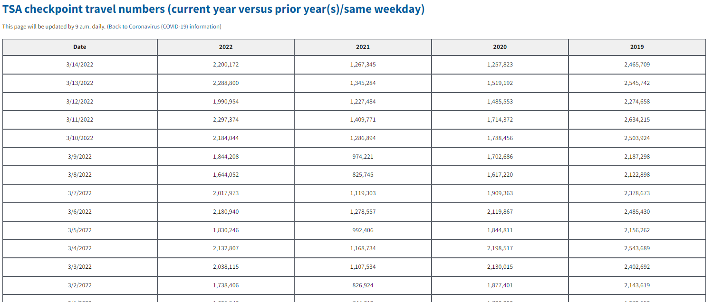

2022-03-15
At the start of the Covid-19 outbreak, the U.S. Transportation Security Administration began sharing TSA security checkpoint passenger throughput numbers.
Currently the data looks like this on their site:
We have daily data with columns for the current and past three years. Based on the way this looks with each prior year in a new column, the prior year data is likely showing TSA checkpoint passengers on the same day of the week in that prior year. In other words, it is day-matched to the same day of the week in the prior years. We'll want to tidy this data, but first we need to get it into Python.
In 2020 when I first started pulling this data, I followed the steps in this great article to automate this process. That is still a great way to pull the data, but I just recently discovered that pandas has a built-in pull_html() function! This will greatly simplify the process. Thanks to this other article for helping me discover this.
read_html() to simplify reading HTML tablesWe should be able to simply call:
pd.read_html("https://www.tsa.gov/coronavirus/passenger-throughput")
You can try this yourself and see if it works. Unfortunately I get a HTTP Error 403: Forbidden error, but we can use a simple workaround.
We can use the requests library to first read the page and then parse it with pd.read_html().
import requests
import pandas as pd
# URL that we want to pull TSA data from
url = "https://www.tsa.gov/coronavirus/passenger-throughput"
# Read the page using requests.get()
r = requests.get(url)
If we now print r, it just shows <Response [200]>, but if we print r.text then it will print the full HTML text of the website. This will print a massive jumble of text to the console, but if you scroll up and look through, you'll notice many tr and td tags along with dates and numbers. That is the data we're trying to get. As this article explains about half-way through, each row in an HTML table is denoted with the tr ("table row") tag and each data point is denoted with the td ("table data") tag. Here is another helpful reference on HTML tables.

Thankfully, our trusty friend pandas will do all of the tr and td parsing for us. We can now call pd.read_html(r.text) on the r.text HTML text that we looked through earlier.
# Use pd.read_html() to parse the page html
df = pd.read_html(r.text)
read_html() returns a list of dataframesNow if we print df it looks like this:
[ Date 2022 2021 2020 2019
0 3/14/2022 2200172.0 1267345 1257823 2465709
1 3/13/2022 2288800.0 1345284 1519192 2545742
2 3/12/2022 1990954.0 1227484 1485553 2274658
3 3/11/2022 2297374.0 1409771 1714372 2634215
4 3/10/2022 2184044.0 1286894 1788456 2503924
.. ... ... ... ... ...
359 3/20/2021 NaN 1373259 548132 2227181
360 3/19/2021 NaN 1477841 593167 2559307
361 3/18/2021 NaN 1413141 620883 2513231
362 3/17/2021 NaN 1146539 779631 2320885
363 3/16/2021 NaN 1092548 953699 2177929
[364 rows x 5 columns]]
Amazingly, this looks like a pandas dataframe that we can use! However we have to take one more step before proceeding. Notice the extra [ at the very start of the dataframe and the closing ] at the very end. This is easy to miss, but it tells us that we actually now have a list of 1 dataframe.
This is the default behavior of pd.read_html(). As the documents say, the function will "Read HTML tables into a list of DataFrame objects." The end of the documents page also says "This function will always return a list of DataFrame or it will fail, e.g., it will not return an empty list." If the site happened to have multiple tables on it, pandas would try to read all of them and store them as separate dataframes within the returned list.
We can confirm that we have a list of 1 dataframe with type() and len():
>>> type(df)
<class 'list'>
>>> len(df)
1
We can select the first element in our list to pull out the dataframe. Then we can convert the Date field from text to datetime and sort by Date. Finally, can save the data for later use!
# The result is a list of 1 dataframe, we need to select that dataframe from the list
df = df[0]
# Changing data types.
df['Date'] = pd.to_datetime(df['Date'])
# Sorting by Date.
df = df.sort_values(by = 'Date')
# Save data in original format
df.to_csv('data/tsa-orig.csv', index=False)
print('Data pulled.')
Now here is the complete code:
import requests
import pandas as pd
def pull_data():
'''
Pull TSA checkpoint traveler data from https://www.tsa.gov/coronavirus/passenger-throughput
'''
# Guided by:
# https://towardsdatascience.com/a-guide-to-scraping-html-tables-with-pandas-and-beautifulsoup-7fc24c331cf7
# https://stackoverflow.com/questions/43590153/http-error-403-forbidden-when-reading-html
# URL that we want to pull TSA data from
url = "https://www.tsa.gov/coronavirus/passenger-throughput"
# Read the page using requests.get()
r = requests.get(url)
# Use pd.read_html() to parse the html text
df = pd.read_html(r.text)
# The result is a list of 1 dataframe, we need to select that dataframe from the list
df = df[0]
# Changing data types.
df['Date'] = pd.to_datetime(df['Date'])
# Sorting by Date.
df = df.sort_values(by='Date')
# Save data in original format
df.to_csv('data/tsa-orig.csv', index=False)
print('Data pulled.')